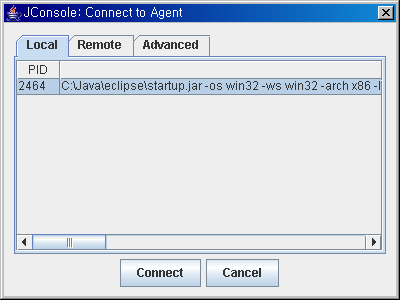
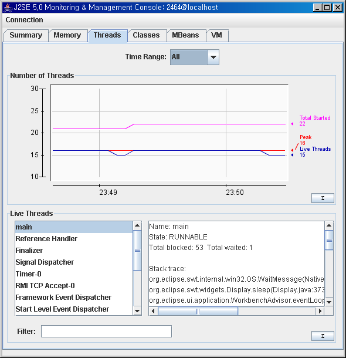
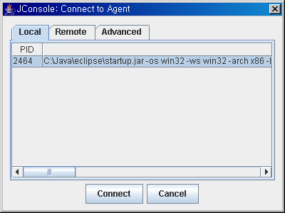
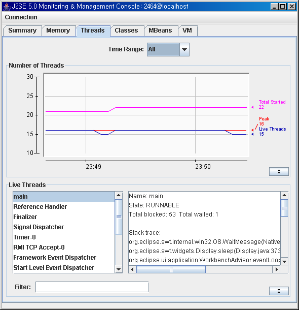

아마도 윈도우에서 (리눅스나 Unix계열도 마찬가지로) javaw.exe로 실행 시킨 프로그램이나 Eclipse나 NetBeans등의 개발 도구에서 내부 콘솔로 띄운 프로그램 혹은 서비스(데몬)로 띄운 프로그램의 쓰레드 덤프를 얻고 싶은데, 어떻게 해야 할지 몰라 당황한 적이 있을 것이다.
이미 떠있는 JVM의 스택 트레이스(Stack Trace 혹은 쓰레드 덤프 Thread Dump)를 뜨기 위한 개발 도구가 생겼다.
Unix/Linux 계열은 Java 5부터 (실질적으로는 JDK 1.4.2_11 도 포함하고 있다고 한다) jstack 이라는 프로그램이 JDK에 포함되었다.
하지만, Windows 용 JDK는 Java 6 부터 포함되었다.
이것은 이미 떠 있는 JVM 프로세스에서 쓰레드 덤프를 뜰 수 있게 해주는 유틸리티이다.
문제는 사실, Unix/Linux 계열에서는 이런 도구가 없어도 어느정도 kill -3 명령으로 쓰레드 덤프 뜨는게 가능 했고, 정작 javaw.exe나 혹은 서비스로 뜬 JVM의 쓰레드 덤프를 뜰 수 있는 방법이 거의 없는(있기는 있다) 윈도우용은 Java 6 이상이어야만 사용 가능하다는 점이다.
아무튼....
먼저 jps 라는 명령으로 JVM의 프로세스 번호를 얻어온다.
그리고는 jstack 명령에 PID를 지정해주면 해당 PID를 가진 JVM의 Stack Trace를 얻게 된다.
Stack Trace는 당연히 st.txt 파일에 저장되어 있다.
jstack에 대한 소개는 Alan Bateman의 jstack이라는 블로그 글에서 보았다.
그렇다면 Windows 에서 Java 5, 1.4 등의 Stack Trace를 얻을 수 있는 방법은 없을까? 있다.
가장 간단한 방법은 Stack Trace라는 프로그램을 이용하는 것이다. 원래는 상용이지만 Java Web Start로 설치하면 회사에서도 무료로 이용하게 되어 있다.
두번째 방법으로 Java 5의 jconsole을 이용하는 방법이 있다.
Java 어플리케이션을 실행할 때 시스템 프라퍼티(System property)로 com.sun.management.jmxremote를 지정해서 실행하면 된다.
다음은 eclipse.ini 파일에 -vmargs 의 부가 옵션으로 -Dcom.sun.management.jmxremote를 지정해서 Eclipse를 실행한 뒤(Windows XP라면 방화벽에서 예외로 지정해야 한다)에 jconsole로 본 것이다. jconsole은 그냥 jconsole.exe를 실행하기만 하면 된다.
* jconsole을 실행하여, 모니터링할 JVM을 선택한다.

* 해당 JVM의 쓰레드 상태를 살펴본다.

이미 떠있는 JVM의 스택 트레이스(Stack Trace 혹은 쓰레드 덤프 Thread Dump)를 뜨기 위한 개발 도구가 생겼다.
jstack
Unix/Linux 계열은 Java 5부터 (실질적으로는 JDK 1.4.2_11 도 포함하고 있다고 한다) jstack 이라는 프로그램이 JDK에 포함되었다.
하지만, Windows 용 JDK는 Java 6 부터 포함되었다.
이것은 이미 떠 있는 JVM 프로세스에서 쓰레드 덤프를 뜰 수 있게 해주는 유틸리티이다.
문제는 사실, Unix/Linux 계열에서는 이런 도구가 없어도 어느정도 kill -3 명령으로 쓰레드 덤프 뜨는게 가능 했고, 정작 javaw.exe나 혹은 서비스로 뜬 JVM의 쓰레드 덤프를 뜰 수 있는 방법이 거의 없는(있기는 있다) 윈도우용은 Java 6 이상이어야만 사용 가능하다는 점이다.
아무튼....
먼저 jps 라는 명령으로 JVM의 프로세스 번호를 얻어온다.
C:\Java\jdk1.6.0\bin>jps --help
illegal argument: --help
usage: jps [-help]
jps [-q] [-mlvV] [<hostid>]
Definitions:
<hostid>: <hostname>[:<port>]
C:\Java\jdk1.6.0\bin>jps -v
3280 Jps -Dapplication.home=C:\Java\jdk1.6.0 -Xms8m
4740 startup.jar -Xms40m -Xmx256m
그리고는 jstack 명령에 PID를 지정해주면 해당 PID를 가진 JVM의 Stack Trace를 얻게 된다.
C:\Java\jdk1.6.0\bin>jstack 4740 > st.txt
Stack Trace는 당연히 st.txt 파일에 저장되어 있다.
jstack에 대한 소개는 Alan Bateman의 jstack이라는 블로그 글에서 보았다.
Stack Trace
그렇다면 Windows 에서 Java 5, 1.4 등의 Stack Trace를 얻을 수 있는 방법은 없을까? 있다.
가장 간단한 방법은 Stack Trace라는 프로그램을 이용하는 것이다. 원래는 상용이지만 Java Web Start로 설치하면 회사에서도 무료로 이용하게 되어 있다.
jconsole
두번째 방법으로 Java 5의 jconsole을 이용하는 방법이 있다.
Java 어플리케이션을 실행할 때 시스템 프라퍼티(System property)로 com.sun.management.jmxremote를 지정해서 실행하면 된다.
다음은 eclipse.ini 파일에 -vmargs 의 부가 옵션으로 -Dcom.sun.management.jmxremote를 지정해서 Eclipse를 실행한 뒤(Windows XP라면 방화벽에서 예외로 지정해야 한다)에 jconsole로 본 것이다. jconsole은 그냥 jconsole.exe를 실행하기만 하면 된다.
* jconsole을 실행하여, 모니터링할 JVM을 선택한다.

* 해당 JVM의 쓰레드 상태를 살펴본다.
